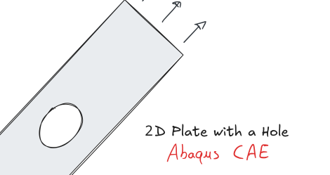

Abaqus Tutorial: 2D Plate with a Hole
This series walks through building, refining and post-processing a plate-with-hole model in Abaqus/CAE, from a first quick model to stress concentrations and nonlinear materials. Every part can be done at home with the Abaqus Learning Edition (1000-node limit).
